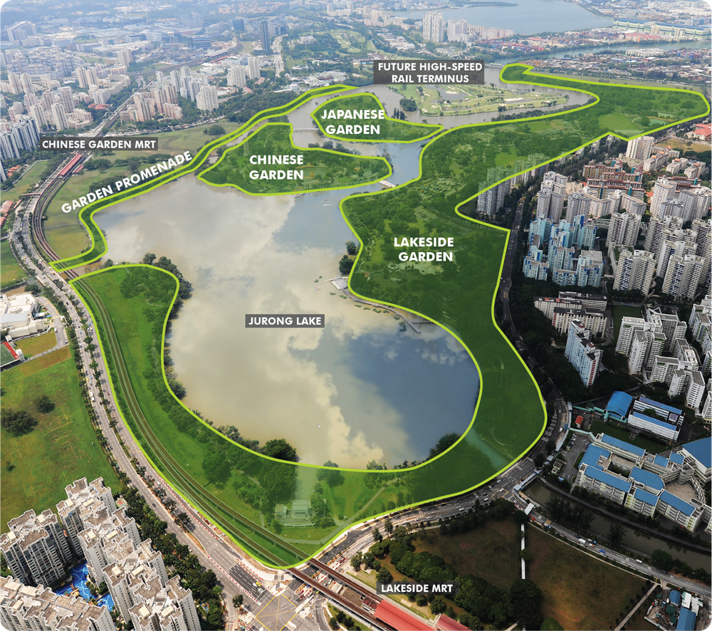

Jurong Lake Gardens joins Botanic Gardens and Gardens By The Bay as the
third National Garden in Singapore.
This 90-hectare garden comprises of Chinese and Japanese Garden, Garden Promenade and the newly opened Lakeside Garden;
which has been opened to public since end-April 2019 with construction works to be completed by 2021.

The intention of this place is for families and the community to come together, in Jurong West and beyond, while also promoting sustainaibility.
As you explore the place, bear in mind and spread the awareness of our Zero Energy Buildings; where the Garden's horticultural waste is converted into electricity;
and the Garden's Water systems that help to filter rainwater to clean water.
Come explore and see what's in store!
Key Attractions
Clusia Cove - experience a unique water playground that is built to mimic water movement of coastal sores! Water is cleansed by a water recycling system
which uses natural treatment methods. Toilets and F&B outlet are available nearby.
Forest Ramble - A nature inspired playground with 13 unique different stations for children to explore!
Grassland - immerse yourself in the natural habitat of many small bird species.
Rasau Walk - get close along the water's edge as you stroll on the boardwalk.
Neram Stream - a testament to our livability and sustainability efforts. The concrete drain running from Yuan Ching Road was converted into naturalised streams that
carries rainwater from the surrounding environment. Let's learn about the rich biodiversity that we have!
Passion Wave - various water sport activities and programmes for all ages with working professionals! A great place try a new activity and to bond!
Download our activity rates here
Active SG gym - gym facilities, swimming pool, exercise playground and fitness classes for all ages! Outdoor spaces are also for rental.
Swimming pool and Gym opens Mon - Wed, Fri, Sun & PH: 7:00am - 10:00pm | Thurs: 3:00pm - 10:00pm |